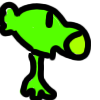
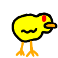

Создай комнату для друга или зайди в свободную. После подключения каждый сам выберет сторону: растения Кирилла или утки-зомби.

vs

ПРИГЛАСИ ДРУГА
Новая комната
Хозяин комнаты запускает бой на своём устройстве. Второй игрок увидит его поле и сможет отправлять команды.
ВЫБЕРИ КОМНАТУ
Свободные комнаты
Ищем открытые комнаты…
Друг может поделиться ссылкой с кодом комнаты. Закрытые и занятые комнаты в список не попадают.
СОЗДАЙ СВОЮ ИГРУ
Мастерская платформера
Собери уровень из блоков, монет и препятствий, проверь его и опубликуй в каталоге «Уровни игроков».
ПЛАТФОРМЕННЫЙ РЕДАКТОР
Мастерская
Создавай, испытывай и публикуй собственные уровни. Черновик сохраняется на этом устройстве.
ТВОЙ ПРОЕКТ
Новый уровень
Бесконечная карта · окно просмотра 16 × 10 · игрок и финиш уже на месте.
ИГРАЙ И ПУБЛИКУЙ
Уровни игроков
Открой каталог опубликованных уровней и испытай их в браузере. Новая публикация появится и в C/native-клиенте.
Публикация общедоступна и не требует аккаунта. Firebase может отклонить запись, если правила базы не разрешают публикацию.
Сцена · окно карты 16 × 100 / 120 объектов
Перетаскивай объекты в «Выбрать», карту — в «Карта». Зелёные стрелки двигают выделение; бирюзовые — окно карты. Для группы включи «Мульти» или Shift + нажатие.
ПРЕДПРОСМОТР
Уровень
На телефоне доступны экранные кнопки; нажимай направление и прыжок одновременно.
Доберись до финиша и попробуй собрать монеты.
Уровни игроков
Уровни доступны на вебе, Android и Windows. Выбери уровень, чтобы сыграть в браузере.
Загружаем каталог…
ВЫ В КОМНАТЕ
Выбери сторону
Ждём соперника…
КОД КОМНАТЫ------
Оба игрока выбирают разные стороны. Бой начнётся автоматически.